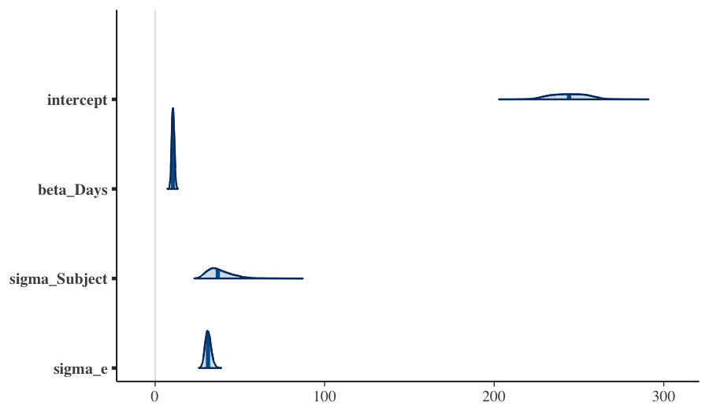
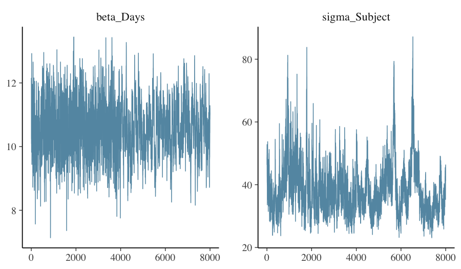

Tutorial 08: Downstream analysis: emmeans, marginaleffects, bayesplot, loo
2026-06-06
Source:vignettes/flexyBayes-08-downstream-analysis.Rmd
flexyBayes-08-downstream-analysis.Rmd1. Once the fit is in hand
A fitted flexybayes object is the input to the standard
R modelling ecosystem: summary(), predict(),
emmeans::emmeans(),
marginaleffects::predictions(), bayesplot::*,
posterior::*, loo::loo(),
effectsize::standardize_parameters(). Each of these
downstream tools answers a different question. This vignette walks
through the most common ones using a single fit as the running
example.
The pedagogical point is that the same posterior supports many different summaries. Choosing the right summary is part of the analysis, not a clerical step at the end of it.
2. The running example
We re-fit the random-intercept model from the getting started vignette and retain it for the rest of this vignette.
library(flexyBayes)
data(sleepstudy, package = "lme4")
fit <- fb_greta(
Reaction ~ Days + (1 | Subject),
data = sleepstudy,
n_samples = 2000,
warmup = 5000,
chains = 4,
verbose = FALSE,
mcmc_verbose = FALSE
)
fit
#> Bayesian mixed model [flexyBayes]
#> -------------------------------------------------------
#> Fixed : Reaction ~ Days + (1 | Subject)
#> Family : gaussian ( identity link )
#> MCMC : 4 chain(s) x 2000 samples (warmup = 5000 ) -- 26.6 sec
#> Params : 4 monitored; 2 fixed, 1 random terms
#> Representation: exact
#> Engine: greta MCMC
#> Max Rhat: 1.365 [!]
#> Min ESS: 66
#> -------------------------------------------------------
#> $glm -- GLM-compatible (summary, emmeans, etc.)
#> $greta -- native greta (draws, model, calculate)
#> $extras -- diagnostics, BLUPs, variance componentsfit is of class flexybayes. Its
summary() method gives the posterior digest; its
coef() method returns the posterior means of the fixed
effects; its predict() method computes posterior
predictions on a newdata of your choice.
A note on the diagnostics. This is the same random-intercept model as the getting started vignette, fit at a production budget (warmup 5000, four chains). The fixed effects – which the
emmeansandmarginaleffectsanalyses below rely on – mix well; the Subject variance component mixes more slowly, so its worst sits above the strict 1.01 target, by an amount that varies from run to run (greta’s TensorFlow sampler is not fully seed-reproducible). The downstream summaries below are functions of the fixed-effect posterior and are unaffected.
summary(fit)
#> Bayesian mixed model summary [flexyBayes]
#> ============================================================
#> Fixed : Reaction ~ Days + (1 | Subject)
#> Family : gaussian / identity
#> N = 180 , chains = 4 , samples = 2000
#> Representation: exact
#> Engine: greta MCMC
#>
#> -- Fixed effects (posterior) ---------------------------------
#> Estimate Post.SD 2.5% 97.5%
#> (Intercept) 244.3110 11.4101 223.6812 266.6572
#> Days 10.5609 0.8064 8.9998 12.1716
#>
#> -- Variance components --------------------------------------
#> Component Estimate SD 2.5% 97.5%
#> 1 sigma_Subject 38.5528 8.0052 27.5404 58.5537
#> 2 sigma_e_atg 31.2962 1.7861 28.0325 35.0737
#>
#> -- Convergence ---------------------------------------------
#> Rhat range: 1.003 - 1.365
#> ESS range: 66 - 2243
#> Run time : 26.6 sec
coef(fit)
#> (Intercept) Days
#> 244.31098 10.560853. emmeans — marginal means and contrasts
emmeans (Lenth, 2022) computes estimated marginal
means: the predicted response (or any link-scale linear
combination) evaluated at a chosen reference grid, averaged
appropriately over the other variables. The integration with
flexyBayes is via two S3 methods,
recover_data.flexybayes() and
emm_basis.flexybayes(), which feed emmeans the
posterior-mean coefficient vector (coef()) and the
posterior covariance matrix (vcov()).
The resulting credible interval on each marginal mean is therefore a Gaussian approximation to the true posterior of the linear combination. For well-behaved fits the approximation is excellent (linear combinations of approximately-jointly-Gaussian posteriors are themselves approximately Gaussian); for skewed posteriors — small group counts, boundary problems — it can understate the tail.
A typical first call estimates the predicted reaction time at three days of the experiment:
library(emmeans)
em <- emmeans(fit, ~ Days, at = list(Days = c(0, 5, 9)))
em
#> Days emmean SE df asymp.LCL asymp.UCL
#> 0 244 11.4 Inf 222 267
#> 5 297 10.9 Inf 276 318
#> 9 339 11.5 Inf 317 362
#>
#> Confidence level used: 0.95For pairwise contrasts:
pairs(em)
#> contrast estimate SE df z.ratio p.value
#> Days0 - Days5 -52.8 4.03 Inf -13.097 <0.0001
#> Days0 - Days9 -95.0 7.26 Inf -13.097 <0.0001
#> Days5 - Days9 -42.2 3.23 Inf -13.097 <0.0001
#>
#> P value adjustment: tukey method for comparing a family of 3 estimatesFor full posterior propagation through marginal means — the version
that reports an exact equal-tailed credible interval rather than a
Gaussian-approximate one — drop down to
fb_as_draws_simple() and compute the linear combination per
draw:
draws <- flexyBayes::fb_as_draws_simple(fit)
# mu_at_day_d = global intercept + d * beta_Days (greta naming)
mu_d <- function(d) draws$mu_atg + d * draws$beta_Days
sapply(c(0, 5, 9), function(d) {
s <- mu_d(d)
c(mean = mean(s), q025 = quantile(s, 0.025), q975 = quantile(s, 0.975))
})
#> [,1] [,2] [,3]
#> mean 244.3110 297.1152 339.3586
#> q025.2.5% 223.6812 277.5268 318.1806
#> q975.97.5% 266.6572 318.2303 362.41874. marginaleffects — predictions, comparisons, and
slopes
marginaleffects (Arel-Bundock, 2024) provides three
closely-related summaries.
-
predictions()evaluates the response on a grid of predictors; -
comparisons()evaluates differences in predictions across user-specified contrasts; -
slopes()evaluates partial derivatives of predictions with respect to a continuous predictor.
marginaleffects works directly on
flexyBayes fits on both the greta and INLA backends. The
functions dispatch through the package’s get_predict() /
get_coef() / get_vcov() accessors and return
population-level (fixed-effect) predictions on the identity link:
predictions(fit, newdata = data.frame(Days = c(0, 5, 9), Subject = "308"))
avg_comparisons(fit,
variables = list(Days = c(0, 9)),
newdata = data.frame(Days = NA, Subject = "308"))
avg_slopes(fit, variables = "Days",
newdata = data.frame(Days = 5, Subject = "308"))The manual route through fb_as_draws_simple() remains
available and covers the same ground with full posterior draws:
draws <- flexyBayes::fb_as_draws_simple(fit)
# Predicted reaction time at days 0, 5, 9 (population-level — omits
# subject offset)
predict_pop <- function(d) draws$mu_atg + d * draws$beta_Days
sapply(c(0, 5, 9), function(d) {
s <- predict_pop(d)
c(pred = mean(s), q025 = quantile(s, 0.025), q975 = quantile(s, 0.975))
})
#> [,1] [,2] [,3]
#> pred 244.3110 297.1152 339.3586
#> q025.2.5% 223.6812 277.5268 318.1806
#> q975.97.5% 266.6572 318.2303 362.4187
# Comparison: difference between day 9 and day 0
diff_9_0 <- predict_pop(9) - predict_pop(0)
c(diff = mean(diff_9_0), q025 = quantile(diff_9_0, 0.025),
q975 = quantile(diff_9_0, 0.975))
#> diff q025.2.5% q975.97.5%
#> 95.04766 80.99842 109.54425For full posterior propagation through complex counterfactuals —
where marginaleffects summarises to population means while
the draws carry the entire posterior — the manual draws-based route
stays useful.
marginaleffects and emmeans overlap in
scope. The rule of thumb: emmeans for grouped means and
pairwise contrasts on factors; marginaleffects for
derivative-based summaries and complex counterfactuals.
5. bayesplot — diagnostic and posterior plots
bayesplot (Gabry, Simpson, Vehtari, Betancourt, &
Gelman, 2019) provides the canonical posterior visualisations. The
bridge from flexyBayes to bayesplot is the
posterior::draws_array interface, exposed via
fb_as_draws_simple().
library(bayesplot)
draws <- flexyBayes::fb_as_draws_simple(fit)
# Greta names: mu_atg (intercept), beta_Days (slope), sigma_Subject
# (random-effect SD), sigma_e_atg (residual SD).
da <- do.call(cbind, draws[c("mu_atg", "beta_Days",
"sigma_Subject", "sigma_e_atg")])
colnames(da) <- c("intercept", "beta_Days", "sigma_Subject", "sigma_e")
mcmc_areas(da, prob = 0.9)
Diagnostic plots — trace, autocorrelation, rank — are equally straightforward:
mcmc_trace(da, pars = c("beta_Days", "sigma_Subject"))
A trustworthy fit shows trace plots that look like fuzzy caterpillars, autocorrelations that decay rapidly, and rank histograms close to uniform. Departure from any of these is a diagnostic prompt — see the cross-engine triangulation vignette for what to do.
6. loo — predictive performance and model
comparison
loo::loo() (Vehtari, Gelman, & Gabry, 2017; Vehtari,
Simpson, Gelman, Yao, & Gabry, 2024) computes Pareto-smoothed
importance- sampling leave-one-out cross-validation (PSIS-LOO), an
estimator of out-of-sample predictive log-density. Each observation
receives a Pareto-shape estimate
,
with
indicating an overly-influential observation that the
importance-sampling approximation cannot trust.
A canonical loo integration requires a
log_lik method that returns the pointwise log-likelihood
draws array (S × N for S posterior draws and N observations).
flexyBayes ships logLik.flexybayes() (a
single-scalar method for likelihood-ratio tests) but does not yet ship
log_lik.flexybayes() (the pointwise draws-array method that
loo requires). The pointwise version is queued for a
subsequent release.
For now, the manual path is to construct the pointwise log-likelihood from the posterior draws and the observed responses:
draws <- flexyBayes::fb_as_draws_simple(fit)
# Approximate the per-draw fitted mean for each observation. With
# random intercepts, we approximate by the population-level prediction
# (omitting subject offsets); for a more accurate version, retain the
# full per-subject draws.
n_draws <- length(draws$mu_atg)
n_obs <- nrow(sleepstudy)
ll_mat <- matrix(NA_real_, nrow = n_draws, ncol = n_obs)
for (s in seq_len(n_draws)) {
mu_s <- draws$mu_atg[s] + draws$beta_Days[s] * sleepstudy$Days
sigma_s <- draws$sigma_e_atg[s]
ll_mat[s, ] <- dnorm(sleepstudy$Reaction, mu_s, sigma_s, log = TRUE)
}
loo_pop <- loo::loo(ll_mat)
loo_pop
#>
#> Computed from 8000 by 180 log-likelihood matrix.
#>
#> Estimate SE
#> elpd_loo -1049.2 29.9
#> p_loo 67.6 8.9
#> looic 2098.4 59.8
#> ------
#> MCSE of elpd_loo is NA.
#> MCSE and ESS estimates assume independent draws (r_eff=1).
#>
#> Pareto k diagnostic values:
#> Count Pct. Min. ESS
#> (-Inf, 0.7] (good) 171 95.0% 631
#> (0.7, 1] (bad) 8 4.4% <NA>
#> (1, Inf) (very bad) 1 0.6% <NA>
#> See help('pareto-k-diagnostic') for details.The
Pareto-
diagnostic is reported per observation. For two competing models on the
same data, loo_compare() returns the expected log pointwise
predictive density (ELPD) difference and its standard error:
loo_compare(loo_a, loo_b)The right interpretation of loo_compare is
predictive: model A is predicted to do better than model B by
elpd_diff log-points per observation, with uncertainty
se_diff. It is not a hypothesis test.
7. effectsize — standardised contrasts and partial
effectsize (Ben-Shachar, Lüdecke, & Makowski, 2020)
standardises contrasts to a common scale (Cohen’s
,
partial
)
and is useful when reporting effect magnitudes across studies that use
different response scales.
The package’s flexybayes-class method dispatches via
parameters::model_parameters(), which does not yet
recognise the flexybayes class — effectsize
integration is queued for a subsequent release. For now, the manual
standardisation path is straightforward:
draws <- flexyBayes::fb_as_draws_simple(fit)
sd_y <- sd(sleepstudy$Reaction)
beta_std <- draws$beta_Days * sd(sleepstudy$Days) / sd_y
c(mean = mean(beta_std),
q025 = quantile(beta_std, 0.025),
q975 = quantile(beta_std, 0.975))
#> mean q025.2.5% q975.97.5%
#> 0.5400146 0.4601936 0.6223771The beta_std values are interpretable as Cohen’s
-style
standardised slopes — one standard-deviation change in Days
shifts standardised reaction time by mean(beta_std).
8. Pareto- in interpretation
The Pareto-shape estimate is more than a regularity check — it identifies which observations dominate the posterior. When an observation has , the importance-sampling approximation to its leave-one-out density is unreliable, but more fundamentally it tells you that this observation is doing a lot of work. Removing it would visibly change the posterior.
In practice:
- Plot values; expect the right tail to thin quickly.
- For each observation, ask: is this observation a leverage point we should investigate, an outlier we should refit with a robust likelihood, or a routine high-information observation?
The cross-engine triangulation vignette uses the high- observations from a Poisson fit as the trigger for refitting with a heavier-tailed likelihood.
9. Pitfalls
emmeans defaults assume balanced data.
When cell counts are unbalanced or random effects are unequally
represented, the default weighting may not be what you want. Read
?emmeans::weights.emmGrid and pass
weights = "proportional" or weights = "equal"
as appropriate.
marginaleffects predictions on the link versus
response scale. For non-Gaussian families,
predictions(type = "link") and
predictions(type = "response") give different scales.
Always state the scale you are reporting.
loo requires pointwise log-likelihood.
Some flexyBayes fits ship a per-observation log-likelihood
draws array; others require it to be computed from
predict(). Check fit$extras$log_lik and
compute it yourself if absent.
Bayes factors are not implemented.
flexyBayes does not estimate marginal likelihoods directly.
PSIS-LOO is the recommended model-comparison instrument. Bayes factors
via bridge sampling are queued for a subsequent release.
10. Active prompts
- Refit the model on a subset (e.g., the first 12 subjects) and
compare
emmeansoutputs with the full fit. How much does removing subjects change the best linear unbiased predictor (BLUP) intervals? - Run
loo()on two fits — the random-intercept and a fixed-effect-only model. Does the random-intercept model win on ELPD? By how much? - Use
marginaleffects::comparisons()to compute the predicted increase inReactionfrom day 0 to day 9 for an average subject (setSubject = NA). Compare with the per-subject prediction.
11. Session information
sessionInfo()
#> R version 4.5.2 (2025-10-31)
#> Platform: aarch64-apple-darwin20
#> Running under: macOS Tahoe 26.5.1
#>
#> Matrix products: default
#> BLAS: /System/Library/Frameworks/Accelerate.framework/Versions/A/Frameworks/vecLib.framework/Versions/A/libBLAS.dylib
#> LAPACK: /Library/Frameworks/R.framework/Versions/4.5-arm64/Resources/lib/libRlapack.dylib; LAPACK version 3.12.1
#>
#> locale:
#> [1] en_AU.UTF-8/en_AU.UTF-8/en_AU.UTF-8/C/en_AU.UTF-8/en_AU.UTF-8
#>
#> time zone: Australia/Adelaide
#> tzcode source: internal
#>
#> attached base packages:
#> [1] stats graphics grDevices utils datasets methods base
#>
#> other attached packages:
#> [1] bayesplot_1.15.0 emmeans_2.0.2 flexyBayes_0.8.3
#>
#> loaded via a namespace (and not attached):
#> [1] tidyselect_1.2.1 dplyr_1.2.1 farver_2.1.2
#> [4] tensorflow_2.20.0 loo_2.9.0 S7_0.2.2
#> [7] INLA_25.10.19 TH.data_1.1-5 tensorA_0.36.2.1
#> [10] bayestestR_0.17.0 digest_0.6.39 estimability_1.5.1
#> [13] lifecycle_1.0.5 sf_1.1-0 gretaR_0.2.0
#> [16] survival_3.8-3 processx_3.9.0 magrittr_2.0.5
#> [19] posterior_1.7.0 compiler_4.5.2 rlang_1.2.0
#> [22] progress_1.2.3 tools_4.5.2 data.table_1.18.2.1
#> [25] knitr_1.51 labeling_0.4.3 prettyunits_1.2.0
#> [28] bridgesampling_1.2-1 classInt_0.4-11 bit_4.6.0
#> [31] reticulate_1.45.0 plyr_1.8.9 RColorBrewer_1.1-3
#> [34] KernSmooth_2.23-26 multcomp_1.4-29 abind_1.4-8
#> [37] withr_3.0.2 grid_4.5.2 datawizard_1.3.0
#> [40] e1071_1.7-17 xtable_1.8-8 future_1.70.0
#> [43] ggplot2_4.0.3 ggridges_0.5.7 globals_0.19.1
#> [46] scales_1.4.0 MASS_7.3-65 dichromat_2.0-0.1
#> [49] insight_1.4.6 cli_3.6.6 mvtnorm_1.3-6
#> [52] crayon_1.5.3 generics_0.1.4 otel_0.2.0
#> [55] RcppParallel_5.1.11-2 reshape2_1.4.5 parameters_0.28.3
#> [58] tfruns_1.5.4 proxy_0.4-29 DBI_1.3.0
#> [61] stringr_1.6.0 splines_4.5.2 parallel_4.5.2
#> [64] effectsize_1.0.2 coro_1.1.0 matrixStats_1.5.0
#> [67] base64enc_0.1-6 marginaleffects_0.32.0 brms_2.23.0
#> [70] vctrs_0.7.3 Matrix_1.7-4 sandwich_3.1-1
#> [73] jsonlite_2.0.0 greta_0.5.1 callr_3.7.6
#> [76] hms_1.1.4 bit64_4.8.0 listenv_0.10.1
#> [79] units_1.0-1 glue_1.8.1 parallelly_1.47.0
#> [82] codetools_0.2-20 distributional_0.7.0 stringi_1.8.7
#> [85] gtable_0.3.6 tibble_3.3.1 pillar_1.11.1
#> [88] Brobdingnag_1.2-9 torch_0.17.0 fmesher_0.7.0
#> [91] R6_2.6.1 evaluate_1.0.5 lattice_0.22-7
#> [94] png_0.1-9 backports_1.5.1 tfautograph_0.3.2
#> [97] class_7.3-23 rstantools_2.6.0 Rcpp_1.1.1-1.1
#> [100] coda_0.19-4.1 nlme_3.1-168 checkmate_2.3.4
#> [103] whisker_0.4.1 xfun_0.57 zoo_1.8-15
#> [106] pkgconfig_2.0.3References
Arel-Bundock, V. (2024). marginaleffects: Predictions, comparisons, slopes, marginal means, and hypothesis tests. R package.
Ben-Shachar, M. S., Lüdecke, D., & Makowski, D. (2020). effectsize: Estimation of effect size indices and standardized parameters. Journal of Open Source Software, 5(56), 2815.
Gabry, J., Simpson, D., Vehtari, A., Betancourt, M., & Gelman, A. (2019). Visualization in Bayesian workflow. Journal of the Royal Statistical Society: Series A, 182(2), 389–402.
Lenth, R. V. (2022). emmeans: Estimated marginal means, aka least-squares means. R package.
Vehtari, A., Gelman, A., & Gabry, J. (2017). Practical Bayesian model evaluation using leave-one-out cross-validation and WAIC. Statistics and Computing, 27(5), 1413–1432.
Vehtari, A., Simpson, D., Gelman, A., Yao, Y., & Gabry, J. (2024). Pareto smoothed importance sampling. Journal of Machine Learning Research, 25(72), 1–58.